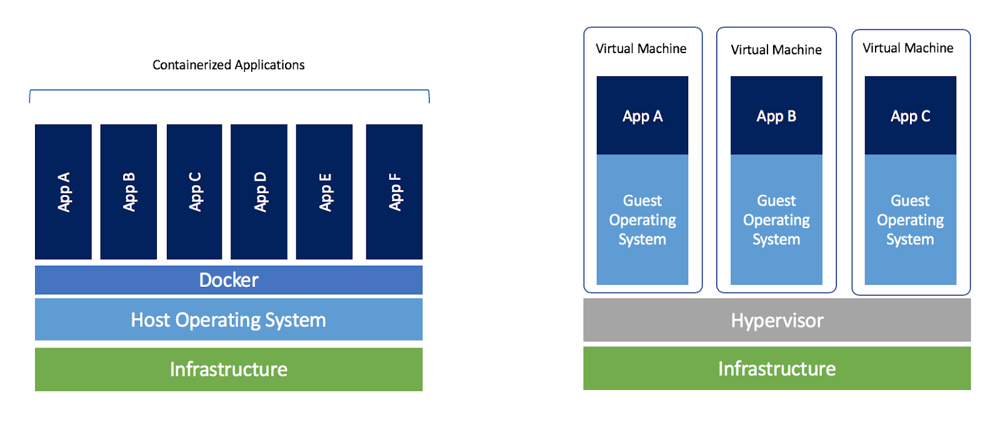
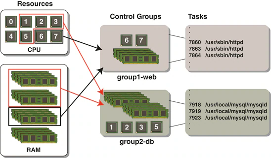

Containers and VMs

- Application isolation: Containers share a kernel
- Containers use kernel namespaces for isolation
https://blog.docker.com/2018/08/containers-replacing-virtual-machines/
Why use containers?
- Immutable artifacts and ephemeral instances
- It works on my machine
- Horizontal scaling
Why not use containers?
- Your application does not run on Linux
- Tightly integrated with the hardware or GUI
- Need kernel level isolation
- Need bare metal performance
Container internals: Isolation

- Kernel namespaces are used to Isolate PID, Mountpoints, Networking, Users, UTS and IPC
- CGroups are used to isolate CPU and memory
Security
- Capabilities: What root can do
- SecComp: Syscalls
- Linux Security Module: AppArmor / SELinux
Starting a docker container
Download and run a lightweight linux container in interactive mode (-i) with a TTY (-t)
docker run -it alpine:latest
Compare the processes running inside the container to the processes on your laptop
Building container images
Create a textfile called Dockerfile with the following:
FROM alpine:latest
RUN apk add curl
Build the image and use it to start a container
docker build -t my-new-image:latest .
docker run -it my-new-image:latest
Volumes: Persistent Data
- Named: Local data managed by docker
- Host: map a host directory into the container
- Anonymous: Random unique id
- Host volumes are useful for dev and conf files
- All volumes are bind mounts by default
- Named volume opts go to the mount syscall
Launching a container with a bind mount
to launch a container with your home directory mounted at /host:
docker run -it -v "$(pwd):/host" alpine:latest
Creating a container and mounting it
to create a volume and mount it at /myvol:
docker volume create my-vol
docker run -it -mount source=myvol2,target=/myvol alpine:latest
volumes persist across container instances
Networking
- Bridge network: A virtual networking switch in Linux (default)
- Host network: Use the network of the docker host without isolation
- Overlay network: Span a bridge network across multiple hosts